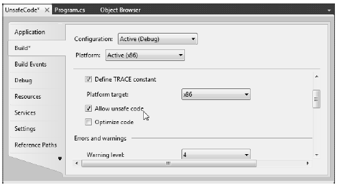

And now, the final topic of the chapter, which most likely will be the least-used of all C# features for the vast majority of your .NET projects. In Chapter 4, you learned that the .NET platform defines two major categories of data: value types and reference types. Truth be told, however, there is a third category: pointer types. To work with pointer types, we get specific operators and keywords that allow us to bypass the CLR’s memory-management scheme and take matters into our own hands (see Table 12-3).
Table 12-3. Pointer-Centric C# Operators and Keywords
| Operator/Keyword | Meaning in Life |
|---|---|
| * | This operator is used to create a pointer variable (i.e., a variable that represents a direct location in memory). As in C(++), this same operator is used for pointer indirection. |
| & | This operator is used to obtain the address of a variable in memory. |
| -> | This operator is used to access fields of a type that is represented by a pointer (the unsafe version of the C# dot operator). |
| [] | This operator (in an unsafe context) allows you to index the slot pointed to by a pointer variable (if you’re a C++ programmer, you will recall the interplay between a pointer variable and the [] operator). |
| ++, -- | In an unsafe context, the increment and decrement operators can be applied to pointer types. |
| +, - | In an unsafe context, the addition and subtraction operators can be applied to pointer types. |
| ==, !=, <, >, <=, => | In an unsafe context, the comparison and equality operators can be applied to pointer types. |
| stackalloc | In an unsafe context, the stackalloc keyword can be used to allocate C# arrays directly on the stack. |
| fixed | In an unsafe context, the fixed keyword can be used to temporarily fix a variable so that its address may be found. |
Now, before we dig into the details, let me again point out that you will seldom if ever need to make use of pointer types. Although C# does allow you to drop down to the level of pointer manipulations, understand that the .NET runtime has absolutely no clue of your intentions. Thus, if you mismanage a pointer, you are the one in charge of dealing with the consequences. Given these warnings, when exactly would you need to work with pointer types? There are two common situations:
In the event that you do decide to make use of this C# language feature, you are required to inform the C# compiler (csc.exe) of your intentions by enabling your project to support “unsafe code.” To do so at the command line, simply supply the /unsafe flag as an argument:
csc /unsafe *.cs
From Visual Studio 2010, you will need to access your project’s Properties page and check the Allow Unsafe Code box from the Build tab (see Figure 12-7). To experiment with pointer types, create a new Console Application project named UnsafeCode and enable unsafe code.
Figure 12-7. Enabling unsafe code using Visual Studio 2010
Note In the examples that follow, I’m assuming you have some background in C(++) pointer manipulation. If this is not true, feel free to skip this topic entirely. Again, writing unsafe code will not be a common task for the vast majority of C# applications.
When you wish to work with pointers in C#, you must specifically declare a block of “unsafe code” using the unsafe keyword (any code that is not marked with the unsafe keyword is considered “safe” automatically). For example, the following Program class declares a scope of unsafe code within the safe Main() method:
class Program { static void Main(string[] args) { unsafe { // Work with pointer types here! } // Can't work with pointers here! } }
In addition to declaring a scope of unsafe code within a method, you can build structures, classes, type members, and parameters that are “unsafe.” Here are a few examples to gnaw on (no need to define these types in your current project):
// This entire structure is "unsafe" and can // be used only in an unsafe context. public unsafe struct Node { public int Value; public Node* Left; public Node* Right; } // This struct is safe, but the Node2* members // are not. Technically, you may access "Value" from // outside an unsafe context, but not "Left" and "Right". public struct Node2 { public int Value; // These can be accessed only in an unsafe context! public unsafe Node2* Left; public unsafe Node2* Right; }
Methods (static or instance level) may be marked as unsafe as well. For example, assume that you know a particular static method will make use of pointer logic. To ensure that this method can be called only from an unsafe context, you could define the method as follows:
unsafe static void SquareIntPointer(int* myIntPointer) { // Square the value just for a test. *myIntPointer *= *myIntPointer; }
The configuration of our method demands that the caller invoke SquareIntPointer() as follows:
static void Main(string[] args) { unsafe { int myInt = 10; // OK, because we are in an unsafe context. SquareIntPointer(&myInt); Console.WriteLine("myInt: {0}", myInt); } int myInt2 = 5; // Compiler error! Must be in unsafe context! SquareIntPointer(&myInt2); Console.WriteLine("myInt: {0}", myInt2); }
If you would rather not force the caller to wrap the invocation within an unsafe context, you could update Main() with the unsafe keyword. In this case, the following code would compile:
unsafe static void Main(string[] args) { int myInt2 = 5; SquareIntPointer(&myInt2); Console.WriteLine("myInt: {0}", myInt2); }
Once you have established an unsafe context, you are then free to build pointers to data types using the * operator and obtain the address of said pointer using the & operator. Unlike in C or C++, in C# the * operator is applied to the underlying type only, not as a prefix to each pointer variable name. For example, consider the following code, which illustrates both the correct and incorrect ways to declare pointers to integer variables:
// No! This is incorrect under C#! int *pi, *pj; // Yes! This is the way of C#. int* pi, pj;
Consider the following unsafe method:
unsafe static void PrintValueAndAddress() { int myInt; // Define an int pointer, and // assign it the address of myInt. int* ptrToMyInt = &myInt; // Assign value of myInt using pointer indirection. *ptrToMyInt = 123; // Print some stats. Console.WriteLine("Value of myInt {0}", myInt); Console.WriteLine("Address of myInt {0:X}", (int)&ptrToMyInt); }
Of course, declaring pointers to local variables simply to assign their value (as in the previous example) is never required and not altogether useful. To illustrate a more practical example of unsafe code, assume you wish to build a swap function using pointer arithmetic:
unsafe public static void UnsafeSwap(int* i, int* j) { int temp = *i; *i = *j; *j = temp; }
Very C-like, don’t you think? However, given your work in Chapter, you should be aware that you could write the following safe version of your swap algorithm using the C# ref keyword:
public static void SafeSwap(ref int i, ref int j) { int temp = i; i = j; j = temp; }
The functionality of each method is identical, thus reinforcing the point that direct pointer manipulation is not a mandatory task under C#. Here is the calling logic using a safe Main(), with an unsafe context:
static void Main(string[] args) { Console.WriteLine("***** Calling method with unsafe code *****"); // Values for swap. int i = 10, j = 20; // Swap values "safely." Console.WriteLine("\n***** Safe swap *****"); Console.WriteLine("Values before safe swap: i = {0}, j = {1}", i, j); SafeSwap(ref i, ref j); Console.WriteLine("Values after safe swap: i = {0}, j = {1}", i, j); // Swap values "unsafely." Console.WriteLine("\n***** Unsafe swap *****"); Console.WriteLine("Values before unsafe swap: i = {0}, j = {1}", i, j); unsafe { UnsafeSwap(&i, &j); } Console.WriteLine("Values after unsafe swap: i = {0}, j = {1}", i, j); Console.ReadLine(); }
Now assume you have defined a simple, safe Point structure as follows:
struct Point { public int x; public int y; public override string ToString() { return string.Format("({0}, {1})", x, y); } }
If you declare a pointer to a Point type, you will need to make use of the pointer field-access operator (represented by ->) to access its public members. As shown in Table 12-3, this is the unsafe version of the standard (safe) dot operator (.). In fact, using the pointer indirection operator (*), it is possible to dereference a pointer to (once again) apply the dot operator notation. Check out the unsafe method:
unsafe static void UsePointerToPoint() { // Access members via pointer. Point point; Point* p = &point; p->x = 100; p->y = 200; Console.WriteLine(p->ToString()); // Access members via pointer indirection. Point point2; Point* p2 = &point2; (*p2).x = 100; (*p2).y = 200; Console.WriteLine((*p2).ToString()); }
In an unsafe context, you may need to declare a local variable that allocates memory directly from the call stack (and is therefore not subject to .NET garbage collection). To do so, C# provides the stackalloc keyword, which is the C# equivalent to the _alloca function of the C runtime library. Here is a simple example:
unsafe static void UnsafeStackAlloc() { char* p = stackalloc char[256]; for (int k = 0; k < 256; k++) p[k] = (char)k; }
As you saw in the previous example, allocating a chunk of memory within an unsafe context may be facilitated via the stackalloc keyword. By the very nature of this operation, the allocated memory is cleaned up as soon as the allocating method has returned (as the memory is acquired from the stack). However, assume a more complex example. During our examination of the -> operator, you created a value type named Point. Like all value types, the allocated memory is popped off the stack once the executing scope has terminated. For the sake of argument, assume Point was instead defined as a reference type:
class PointRef // <= Renamed and retyped. { public int x; public int y; public override string ToString() { return string.Format("({0}, {1})", x, y); } }
As you are aware, if the caller declares a variable of type Point, the memory is allocated on the garbage-collected heap. The burning question then becomes, “What if an unsafe context wishes to interact with this object (or any object on the heap)?” Given that garbage collection can occur at any moment, imagine the problems encountered when accessing the members of Point at the very point in time such a sweep of the heap is under way. Theoretically, it is possible that the unsafe context is attempting to interact with a member that is no longer accessible or has been repositioned on the heap after surviving a generational sweep (which is an obvious problem).
To lock a reference type variable in memory from an unsafe context, C# provides the fixed keyword. The fixed statement sets a pointer to a managed type and “pins” that variable during the execution of the code. Without fixed, pointers to managed variables would be of little use, since garbage collection could relocate the variables unpredictably. (In fact, the C# compiler will not allow you to set a pointer to a managed variable except in a fixed statement.)
Thus, if you create a PointRef type and want to interact with its members, you must write the following code (or receive a compiler error):
unsafe public static void UseAndPinPoint() { PointRef pt = new PointRef (); pt.x = 5; pt.y = 6; // pin pt in place so it will not // be moved or GC-ed. fixed (int* p = &pt.x) { // Use int* variable here! } // pt is now unpinned, and ready to be GC-ed once // the method completes. Console.WriteLine ("Point is: {0}", pt); }
In a nutshell, the fixed keyword allows you to build a statement that locks a reference variable in memory, such that its address remains constant for the duration of the statement (or scope block). Any time you interact with a reference type from within the context of unsafe code, pinning the reference is a must.
The final unsafe-centric C# keyword to consider is sizeof. As in C(++), the C# sizeof keyword is used to obtain the size in bytes of a value type (never a reference type), and it may only be used within an unsafe context. As you may imagine, this ability can prove helpful when you’re interacting with unmanaged Cbased APIs. Its usage is straightforward:
unsafe static void UseSizeOfOperator() { Console.WriteLine("The size of short is {0}.", sizeof(short)); Console.WriteLine("The size of int is {0}.", sizeof(int)); Console.WriteLine("The size of long is {0}.", sizeof(long)); }
As sizeof will evaluate the number of bytes for any System.ValueType-derived entity, you can obtain the size of custom structures as well. For example, we could pass the Point structure into sizeof as follows:
unsafe static void UseSizeOfOperator() { ... Console.WriteLine("The size of Point is {0}.", sizeof(Point)); }
Source Code The UnsafeCode project can be found under the Chapter 12 subdirectory.
That wraps up our look at some of the more powerful features of the C# programming language. In the next chapter, you will see some of these concepts (specifically extension methods and anonymous types) doing very useful things in the context of LINQ to Objects.